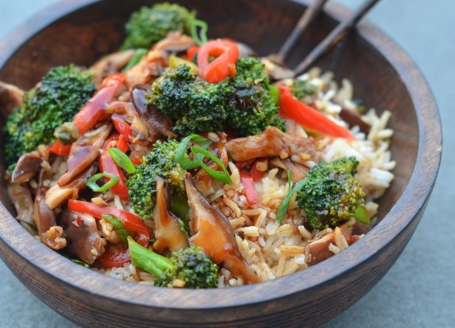

Chinese Stir Fry

Description
Stir fries are always an easy-to-prepare recipe that always taste great. This recipe is chicken based and contains oyster sauce for that classic Chinese stir fry flavour.
As with any stir-fry, be sure to have all of your ingredients ready before you start cooking because it comes together quickly
Ingredients
- 1 ½ tsp olive oil
- 1 egg
- 1 tsp soy sauce
- 25g ginger, minced
- 3 spring onions, sliced
- 1 red chilli, sliced
- 150g cooked roast chicken, shredded
- 1 x 175g pack baby corn and mangetout, sliced
- 250g cooked basmati rice
- 1 tbsp oyster sauce
- ½ tsp sesame oil
Method
- Heat the olive oil in a pan. Whisk the egg with the soy sauce, add to the pan and swirl. Cook for 1-2 mins, then roll up, shred; set aside.
- Add a little olive oil to the pan. Fry the ginger, spring onions and chilli for 1 min.
- Add the chicken, baby corn and mangetout for 1 min, rice for 1 min, then oyster sauce for 2 mins. Stir in the sesame oil and the egg ribbons.